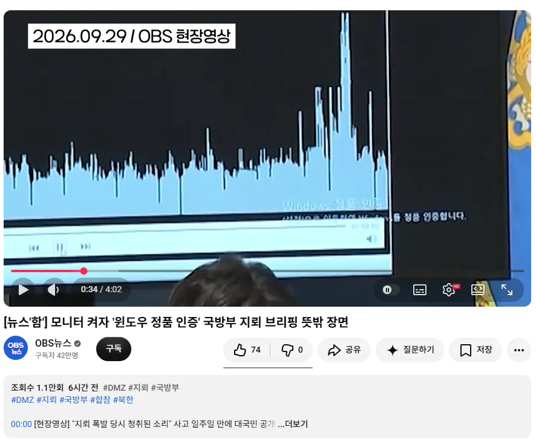

정품이 아님 ㄷㄷㄷㄷㄷ

정품이 아님 ㄷㄷㄷㄷㄷ
국방부면 일괄구매라서 상관없다.
컴퓨터 바꿨거나 했는데 아직 서버에서 인증이 안떨어진것 뿐이겠지.
기관용은 어차피 컴퓨터 한대한대 따로 구매하는건 아닐거라 . 어차피 소프트웨어 회사들은 기관 단위로 불법으로 쓰면 고소해서 원 가격보다 더 벌어먹는 비법을 다 가지고 있다고.
팩트) 마소직원인척 와서 정품채크하고 아니면 본인들 크랙or정품 윈도우 비싸게 팔아먹거나 거부하면 마소에 찔러버리는 식으로 장사하는 양아치들일 확률 높음
기자가 제대로 아는게 없을지도 모름..
크랙슈우우우우우우웃
폐쇄망은 인증깨질수도있음
윈도우 저건 서버인증이라 윈 11병신같은 부팅이랑 겹치면 정품도 저렇게 뜸
나 그래서 전에정품은 잃어버려서 정품 하나 더 샀는데 안고쳐지더라 걍 냅두고살기로함..
저거 단독망이라 인증이 안될뿐이지 라이센스는 다 가지고 있음
라이센스는 뒤지게많이 보유하고있을걸?ㅋㅋㅋ
기관은 저런거 걱정하지마라
무조건 윈도우 완본체 구매하고 소프트웨어는 활성 기기수보다 더 많이 구매함
무슨 기관이 조립식 사는 줄 아나
인트라넷이라
아마 보유 컴퓨터수 3배수로 키 가지고 있을꺼임
키는 있는데 국방망 서버에서 정품 인증 갱신을 일괄로 안한거임. 돈내고 옷 샀는데 도난방지택 안뗀거랑 비슷.
저거 정품인증은 정품도 뜨는에러임 마소가 쓰레기인거...
폐쇄망에서 써도 저거 뜸 윈도우 인증 절차가 좀 ㅈ같은게 있어서
폐쇄망에 쓰는거 전화로 인증하려하면 메뉴설명 온갖언어로 한~참 듣고 그 다음 인증코드까지 겨우겨우 진입했는데 한땀한땀 칠 . . . .구 . . . .구 . . . .팔 ㅇㅈㄹ하는거 한참 듣다가 하나 놓치면 처음부터 다시시작
화딱지나긴해
브리핑에 쓸거 가지고나온거면 묵혀둔 반출가능 노트북 오랜만에 켜서 자료만 넣어서 가지고나왔을텐데, 망에 하도 오랫동안 연결을 안해서 인증 풀렸나보지
기관은 수백대 수천대도 사용하니깐
라이센스로 수백 수천개를 사서 인증 귀찮아서
안된거 쓰고 있을수도 있고
암튼 문제있으면 마소가 가만 안있음.
마소입장에서도 정부는 엄청난 고객이기도하고 마소 운영정책이 개인은 냅두지만
법인은 돈 내놔임
마소
마음의 소리
이게 왜?
국방부 예전에 저걸로 한 번 된통 깨진 적 있어서 라이센스는 잘 확보해 뒀을꺼야.
얘도 걍 모름 ㅋㅋㅋㅋㅋ
렉카야 어그로가 짜구나
진짜 바보임? 일괄구매 모르냐고
시비걸걸 걸어라 라이센스는 일괄구매로 라이센스 다 가지고 있음, 국방망에 물려있으면 인증서버에 붙는거고, 단독망이거나 폐쇄망이면 sw에서 인증여부만 체크하는거라 저거 떠도 라이센스는 pc댓수만큼 군인공제회에서 계약하고 갖고있어서 아무 문제없음
진짜 기자 아무나 하는구나
라이센스 충분히 많이 구매하고 인증 깨질수도 있는건 다 이해하는데 그래도 기자들 상대로 한 공식 브리핑에 쓰는 PC 상태가 저런건 좀 짜치긴 함.
보유한 PC가 한두대도 아니고 사전에 한번만 켜봤으면 바로 알고 바꿨을텐데.
연간계약이라 상관없어
기관들은 각 지역별 총판이랑 pc수량만큼 계약을 하기 때문에 상관없음. 어차피 시리얼도 다 같음. 인가 대수가 초과하면 랜덤하게 인증이 풀리긴 하는데 저긴 국방망이거나 인터넷 연결을 안했을 가능성도 있고.
정품키로 설치해도 인증안되면 저거 나온다
폐쇄망 쓰는 경우에는 인증이 일반 마소 인증서버 접속해서 되는게 아니라 정품도 저런 표시 뜨는 경우 있음.
진지빨면 정품인증 지침나올때까지 기다려야댐... 내가 바로 저거 누른다고 받아지는 것도 아니고 따로 국방망인지 단독망인지 뭐 전용으로 파일주면 그걸로 설치해야댐